Question 5
Statement:
Only Spy is Bag.
Some Bud are Spy.
No Tea is spy.
Conclusion:
I. All tea are Bud.
II. Some Bud is bag is a possibility
💡 Official Solution & Explanation:
![]()
Directions (1-5): In each of the questions below. Some statements are given followed by conclusions/group of conclusions numbered I and II. You have to assume all the statements to be true even if they seem to be at variance from the commonly known facts and then decide which of the given two conclusions logically follows from the information given in the statements.
Q1. Statement:
Some jam are zip.
Some zip are jaw.
No jam is jaw
Conclusion:
I. Some zip are not jaw.
II. All jaw is zip is a possibility
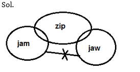
Statement:
Only a few cup is fox
All jug are fox
Some jug are pot.
Conclusion:
I. Some pot are cup.
II. All jug are cup is a possibility.
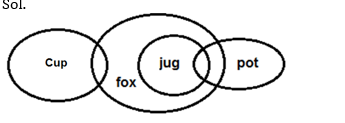
Statement:
Some Gym are map.
All Gym are Mic.
No Gum are Mic.
Conclusion:
I. No Gym are Gum.
II. No Gum is map.
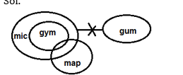
Statement:
Some mop are pig.
No pig is cub.
No cub is Pub.
Conclusion:
I. Some mop are pub is a possibility.
II. No Pub is pig
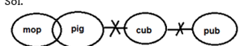
Statement:
Only Spy is Bag.
Some Bud are Spy.
No Tea is spy.
Conclusion:
I. All tea are Bud.
II. Some Bud is bag is a possibility
Directions (6-10): In each of the questions below are given three/four statements followed by three Conclusions numbered I, II and III. You have to take the given statements to be true even if they seem to be at variance from commonly known facts. Read all the Conclusions and then decide which of the given Conclusions logically follows from the given statements disregarding commonly known facts.
Q6. Statements:
Some Cat are not Dog.
All Dog are Ant.
No Ant is Bear.
Conclusions:
I. All Ant are Cat is a possibility.
II. Some Cat are not Bear.
III. Some Ant are Dog is a possibility.
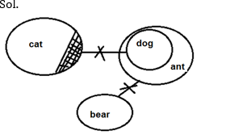
.Statements:
No Eagle is Fish.
Some Fish are Gill.
Some Gill are not Yeast.
Only Yeast is Kite.
Conclusions:
I. Some Gill are Eagle is a possibility.
II. Some Fish is Yeast
III. Some Kite is Eagle is a possibility.
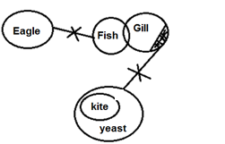
.Statements:
All Apple are Box.
All Box are Cart.
No Apple is Enamel.
Some Box are Enamel.
Conclusions:
I. Some Box are not Enamel.
II. Some Enamel is Cart.
III. Some Cart are definitely Box.
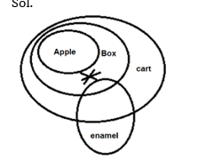
.Statements:
No Almond is Rice.
Some Dust are Almond.
Some Dust are not Flax.
Conclusions:
I. Some Dust are not Rice.
II. Some Flux is rice is possibility
III. No Almond is Flux
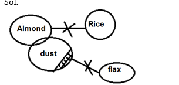
Statements:
Some Queen are Jack
All Night are Moon.
Some Jack are Night.
Some King are Moon
Conclusions:
I. Some Queen are King
II. No King are Queen.
III. Some Moon are Jack is a possibility.
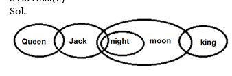
Directions (11-15): In each of the questions below is given three statements followed by two conclusions numbered I and II. You have to take the given statements to be true even if they seem to be at variance with commonly known facts. Read all the conclusions and then decide which of the given conclusions logically follows from the given statements disregarding commonly known facts.
Q11. Statements:
No day is night.
All night is bright.
All bright are star.
Conclusions:
I. All day being bright is a possibility.
II. Some star is not day.
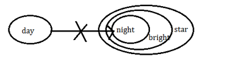
.Statements:
Some steel is cup.
All steel is metal.
Some metal is iron.
Conclusions:
I. All cup is iron.
II. Some iron is not cup.
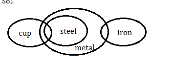
Statements:
Some gold is iron.
Only a few iron is silver.
No silver is black.
Conclusions:
I. Some gold is black.
II. All Black is Iron is a possibility
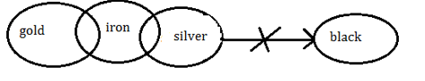
Statements:
Some red is green.
All blue is pink.
No green is blue.
Conclusions:
I. Some Red is Pink is a possibility
II. No Blue is Red.
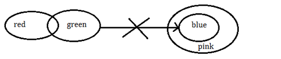
Statements:
Some bird is animal.
No animal is wild
Some wild is lion.
Conclusions:
I. Some bird is lion.
II. No lion is bird.
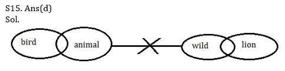
This is the solution